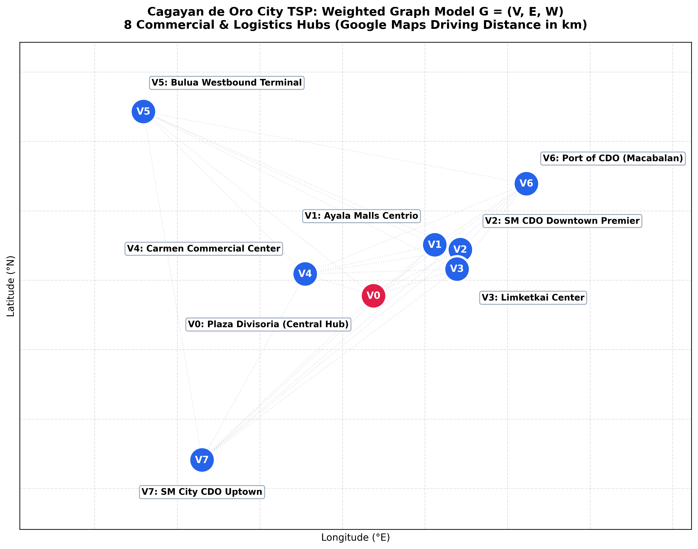

Graph Theory Performance Innovative Task
Cagayan de Oro Tourist Driving Tour
Solving an 8-Stop Real-Life Asymmetric TSP via Particle Swarm Optimization (Section 2.4)
Assigned Algorithm
Algorithm 2.4
Luna-Garcia et al. (TMJM 2024)
Discrete Permutation PSO with Transposition Swap Sequences
Discrete Permutation PSO with Transposition Swap Sequences
Graph & Problem Scope
8 Nodes / 56 Arcs
Starting Depot: Plaza Divisoria (V0)
Directed Asymmetric Driving Distances (OSRM)
Directed Asymmetric Driving Distances (OSRM)
Optimization Result
36.47 km
Exact Matrix Optimum: 35.95 km
Approximate Solution (1.45% Gap in <0.05s)
Approximate Solution (1.45% Gap in <0.05s)
Slide 1 of 10 • Component 1: Problem Overview
Use [←] and [→] Arrow Keys
🎙️ Presenter Script (0:00 – 1:00)
“Good day. Today, I am presenting our Graph Theory Performance Innovative Task: solving a real-life Traveling Salesperson Problem in Cagayan de Oro City using our assigned algorithm, Discrete Particle Swarm Optimization.
Our scenario involves planning an efficient driving tour for a group of tourists visiting Cagayan de Oro. They hire a single vehicle, start at Plaza Divisoria, visit seven other prominent tourist destinations, and return to Plaza Divisoria. The mathematical challenge is to determine the optimal visiting order that minimizes the total driving distance while visiting each required location exactly once.”
Our scenario involves planning an efficient driving tour for a group of tourists visiting Cagayan de Oro. They hire a single vehicle, start at Plaza Divisoria, visit seven other prominent tourist destinations, and return to Plaza Divisoria. The mathematical challenge is to determine the optimal visiting order that minimizes the total driving distance while visiting each required location exactly once.”
Component 1: Introduction & Grounding
Tourist Destinations & Google Maps Verification
Curated eight-stop driving circuit located strictly within Cagayan de Oro City
Verified Destinations Table (CDO Ground Truth)
| Node | Attraction Name | Location / Street | Access Type |
|---|---|---|---|
| V0 | Plaza Divisoria (Depot) | RN Capistrano & Tirso Neri St | Street Depot |
| V1 | Gaston Park | Corner Gaerlan & Rizal St | Curb Drop-off |
| V2 | St. Augustine Cathedral | Corner Gaston Circle | Street Access |
| V3 | Museo de Oro | Corrales Ave entrance (XU) | Corrales Gate |
| V4 | Vicente de Lara Park | Antonio Luna St (Capitol) | Street Curb |
| V5 | High Ridge | Upper Macasandig | Access Road |
| V6 | Amaya View | Indahag Highland Resort | Driveway Access |
| V7 | Gardens of Malasag | Malasag Hill, Cugman | Mountain Road |
Real-World Road Grounding
- Source Travel Guide: Curated from LakbayPinas Cagayan de Oro Guide, filtered strictly within city bounds.
- Pedestrian Campus Adjustment: Destinations inside pedestrian plazas (e.g. Museo de Oro in Xavier University, Cathedral) use verified street-accessible vehicular drop-off curb nodes on Corrales Ave and Gaston Circle.
- Google Maps Verification: All 8 coordinates verified on Google Maps with street access links stored in cdo_tsp_locations.csv.
Slide 2 of 10 • Component 1: Data Verification
Use [←] and [→] Arrow Keys
🎙️ Presenter Script (1:00 – 2:15)
“The destinations are selected from the LakbayPinas Cagayan de Oro travel guide. We chose eight key spots located strictly within Cagayan de Oro City: V0 Plaza Divisoria, V1 Gaston Park, V2 St. Augustine Cathedral, V3 Museo de Oro, V4 Vicente de Lara Park, V5 High Ridge in Macasandig, V6 Amaya View in Indahag, and V7 Gardens of Malasag in Cugman.
Each location was verified on Google Maps. Because places like Museo de Oro and the Cathedral sit inside pedestrian campuses or plazas, we designated street-level vehicular drop-off nodes on Corrales Avenue and Gaston Circle to reflect realistic driving access.”
Each location was verified on Google Maps. Because places like Museo de Oro and the Cathedral sit inside pedestrian campuses or plazas, we designated street-level vehicular drop-off nodes on Corrales Avenue and Gaston Circle to reflect realistic driving access.”
Component 1: Mathematical Model
Mathematical Formulation & Assumptions
Constrained Asymmetric Traveling Salesperson Problem on Road Topology
Objective Function
min Z(π) = Σ D[π[k], π[k+1 (mod 8)]]
for k = 0, 1, ..., 7
for k = 0, 1, ..., 7
- π is an ordered cyclic permutation: π = [V0, π[1], ..., π[7]]
- D[u, v] is the shortest road driving distance from node u to v in kilometres.
- Closed Cycle: The final leg returns from π[7] to the depot π[0] = V0.
Graph Constraints & Scope
- Complete Directed Graph: G = (V, A, D) with |V| = 8 vertices and |A| = 56 directed arcs.
- Matrix Asymmetry: Generally D[u, v] ≠ D[v, u] due to downtown one-way streets (e.g. Capistrano, Burgos, RN Abejuela).
- Search Space Complexity: With starting depot V0 fixed, there are (8 - 1)! = 7! = 5,040 distinct feasible Hamiltonian cycles.
- Assumptions: Static network distances (no live congestion); entrance fees and visiting durations outside the distance objective.
Slide 3 of 10 • Component 1: Problem Formulation
Use [←] and [→] Arrow Keys
🎙️ Presenter Script (2:15 – 3:00)
“Our objective is to minimize total driving distance in kilometres: Z(pi) = D[pi[0], pi[1]] + D[pi[1], pi[2]] + ... + D[pi[7], pi[0]].
Key assumptions:
1. Closed tour: Start and finish at V0, visiting V1 through V7 exactly once.
2. The vehicle travels on real road networks. Because of one-way roads and traffic flow, travel between two stops is directed: distance from A to B does not necessarily equal B to A.
3. We optimize distance; entrance fees, sightseeing durations, and live congestion are outside the distance objective.”
Key assumptions:
1. Closed tour: Start and finish at V0, visiting V1 through V7 exactly once.
2. The vehicle travels on real road networks. Because of one-way roads and traffic flow, travel between two stops is directed: distance from A to B does not necessarily equal B to A.
3. We optimize distance; entrance fees, sightseeing durations, and live congestion are outside the distance objective.”
Component 2: Assigned Algorithm
Discrete Particle Swarm Optimization
Adapting Luna-Garcia et al. (TMJM 2024, Section 2.4) to Permutation Spaces
Permutation Mapping (Section 2.4)
- Continuous vs Discrete: Standard PSO uses continuous velocity vectors v_i ∈ ℝⁿ. For TSP, we map velocity to an ordered list of transposition swaps.
- Particle Position (X_i): Candidate permutation [V0, π[1], ..., π[7]].
- Cognitive Alignment (pbest_i): Particle’s personal best permutation discovered so far.
- Social Alignment (gbest): Swarm-wide best permutation discovered so far.
- Velocity Operator: Sequence of swaps (j, k) that transforms position X_i toward pbest_i or gbest.
Update Rules & Swarm Parameters
V_i(t+1) = w ⊗ V_i(t) ⊕ c1 ⊗ (pbest ⊖ X_i) ⊕ c2 ⊗ (gbest ⊖ X_i)
X_i(t+1) = X_i(t) ⊙ V_i(t+1)
X_i(t+1) = X_i(t) ⊙ V_i(t+1)
- Swarm Size (N): 40 particles
- Iterations (T): 120 generations (4,800 total evaluations)
- Inertia Probability (w): 0.5 (retains previous swaps)
- Cognitive Weight (c1): 0.8 (attraction to personal best)
- Social Weight (c2): 0.8 (attraction to global best)
- Exploratory Mutation: 0.2 (random 2-swap escape)
Slide 4 of 10 • Component 2: Algorithm Theory
Use [←] and [→] Arrow Keys
🎙️ Presenter Script (3:00 – 4:15)
“Our assigned algorithm is Particle Swarm Optimization (PSO). In continuous PSO, particles move through space via position and velocity vectors. But TSP is a discrete permutation problem:
- A particle represents a candidate visiting order, with depot V0 fixed at position 0.
- Fitness is the total closed-tour distance Z.
- Velocity is represented as a sequence of transpositions or swaps acting on non-depot cities.
- Each particle remembers its personal best order (pbest), and the swarm shares the best order discovered so far (gbest).
In our implementation, we use 40 particles and 120 iterations. Previous swaps are retained with inertia probability w = 0.5. Cognitive alignment toward pbest occurs with probability c1 = 0.8, social alignment toward gbest with probability c2 = 0.8, and an exploratory random swap occurs with probability 0.2.”
- A particle represents a candidate visiting order, with depot V0 fixed at position 0.
- Fitness is the total closed-tour distance Z.
- Velocity is represented as a sequence of transpositions or swaps acting on non-depot cities.
- Each particle remembers its personal best order (pbest), and the swarm shares the best order discovered so far (gbest).
In our implementation, we use 40 particles and 120 iterations. Previous swaps are retained with inertia probability w = 0.5. Cognitive alignment toward pbest occurs with probability c1 = 0.8, social alignment toward gbest with probability c2 = 0.8, and an exploratory random swap occurs with probability 0.2.”
Component 2: Numerical Calculation Trace
Step-by-Step Calculation Walkthrough
Tracing Position Alignment, Transposition Swap, and Leg Recalculation
1. Swap Generation & Alignment
- Current Route X:
[V0, V3, V1, V2, V4, V5, V6, V7] (Cost = 38.50 km) - Target Global Best gbest:
[V0, V3, V4, V7, V6, V5, V2, V1] - Scan left to right:
- Index 1: Both have V3 (Match ✓)
- Index 2: X[2] = V1, but target needs V4
- In X, V4 is at index 4
- Generate Swap: swap(2, 4)
- With c2 = 0.8, execute swap!
- New Route X':
[V0, V3, V4, V2, V1, V5, V6, V7]
2. Edge Recalculation & Improvement
- Altered Directed Legs:
• V3 → V4 = 1.3014 km
• V4 → V2 = 1.6845 km
• V2 → V1 = 0.1585 km
• V1 → V5 = 4.9691 km
New Subtotal = 8.1135 km - Previous Directed Legs:
• V3 → V1 (0.45 km) + V1 → V2 (0.16 km) + V2 → V4 (1.49 km) + V4 → V5 (6.22 km)
Old Subtotal = 8.3199 km - Distance Delta: 8.1135 - 8.3199 = -0.2064 km
- New Total Cost: 38.50 - 0.21 = 38.2936 km
- Verdict: Tour cost decreases! Particle immediately updates its pbest.
Slide 5 of 10 • Component 2: Step-by-Step Calculation
Use [←] and [→] Arrow Keys
🎙️ Presenter Script (4:15 – 5:30)
“Let’s look at a concrete step-by-step calculation:
Suppose a particle currently has the route: X = [V0, V3, V1, V2, V4, V5, V6, V7]. Summing the 8 legs from our distance matrix gives a total cost of 38.50 km.
Now, suppose the global best target gbest is [V0, V3, V4, V7, V6, V5, V2, V1].
During social alignment, the algorithm scans from left to right: Index 1 matches. At index 2, X has V1, but the target requires V4. In our particle, V4 is at index 4. With probability c2 = 0.8, the algorithm executes swap (2, 4).
The new route becomes [V0, V3, V4, V2, V1, V5, V6, V7]. Recalculating the altered legs: V3 to V4, V4 to V2, V2 to V1, and V1 to V5, the new tour cost drops to 38.29 km. Because this cost is lower, the particle immediately updates its personal best!”
Suppose a particle currently has the route: X = [V0, V3, V1, V2, V4, V5, V6, V7]. Summing the 8 legs from our distance matrix gives a total cost of 38.50 km.
Now, suppose the global best target gbest is [V0, V3, V4, V7, V6, V5, V2, V1].
During social alignment, the algorithm scans from left to right: Index 1 matches. At index 2, X has V1, but the target requires V4. In our particle, V4 is at index 4. With probability c2 = 0.8, the algorithm executes swap (2, 4).
The new route becomes [V0, V3, V4, V2, V1, V5, V6, V7]. Recalculating the altered legs: V3 to V4, V4 to V2, V2 to V1, and V1 to V5, the new tour cost drops to 38.29 km. Because this cost is lower, the particle immediately updates its personal best!”
Component 3: Graph Model & Data
Complete Graph Model & Asymmetric Weight Matrix
Figure 1: Labeled Topological Digraph (Left) and 8×8 OSRM Distance Heatmap (Right)

Formal Graph Properties
- Complete Digraph: G = (V, A, D) with 8 nodes and 56 directed arcs.
- Optimal Cycle: Bold teal arrows highlight the discovered closed Hamiltonian cycle.
- Matrix Asymmetry:
• D[V0, V1] = 0.63 km
• D[V1, V0] = 0.36 km
Difference = 0.27 km (75% longer!) - Engineering Rationale: Downtown CDO has strict one-way streets (Capistrano, Burgos). Symmetrizing would create impossible illegal driving maneuvers.
Slide 6 of 10 • Component 3: Graph Model & Matrix
Use [←] and [→] Arrow Keys
🎙️ Presenter Script (5:30 – 7:00)
“Here on Slide 6 is our complete Graph Model and Distance Matrix.
On the left, we represent the problem as a complete directed weighted graph G = (V, A, D) with 8 vertices and 56 directed arcs. The bold teal arrows show the closed Hamiltonian cycle discovered by PSO, complete with leg distances.
On the right is our 8-by-8 asymmetric weight matrix. Notice that travel costs are asymmetric. For example: Driving from Plaza Divisoria (V0) to Gaston Park (V1) is 0.63 km. But returning from Gaston Park to Plaza Divisoria is only 0.36 km. This asymmetry is caused by real-world one-way streets around downtown CDO. Symmetrizing the matrix would produce unrealistic routes, so we preserve the full directed structure.”
On the left, we represent the problem as a complete directed weighted graph G = (V, A, D) with 8 vertices and 56 directed arcs. The bold teal arrows show the closed Hamiltonian cycle discovered by PSO, complete with leg distances.
On the right is our 8-by-8 asymmetric weight matrix. Notice that travel costs are asymmetric. For example: Driving from Plaza Divisoria (V0) to Gaston Park (V1) is 0.63 km. But returning from Gaston Park to Plaza Divisoria is only 0.36 km. This asymmetry is caused by real-world one-way streets around downtown CDO. Symmetrizing the matrix would produce unrealistic routes, so we preserve the full directed structure.”
Component 3: Methodology & Reproducibility
Data Pipeline & Offline Reproducibility
OpenStreetMap Overpass + OSRM Table/Route APIs with SHA-256 Manifest
Reproducible Pipeline Architecture
- 1. OpenStreetMap Node Acquisition: Extracted exact latitudes and longitudes, ensuring vehicular drop-off access.
- 2. OSRM Driving Distance Matrix: Queried OSRM Table API for all 8 × 8 = 64 directed pairs.
- 3. Detailed Polyline Geometries: Queried OSRM Route API for high-resolution road path coordinates.
- 4. Immutable Raw Archival: Raw JSON responses stored in data/raw/ with SHA-256 hashes in manifest.
Software Engineering Standards
- Zero External Dependencies: Core PSO solver (cdo_tsp_pso_solver.py) runs purely on Python standard library (csv, json, math, random).
- Automated Test Suite: 15/15 unit tests passing in pytest tests/test_tsp.py.
- Verification Scope: Tests validate node count, non-negativity, zero diagonal, permutation validity, and seed reproducibility.
- 100% Offline Capable: Can be rebuilt and validated without internet access.
Slide 7 of 10 • Component 3: Data Pipeline
Use [←] and [→] Arrow Keys
🎙️ Presenter Script (7:00 – 7:45)
“All road distances and geometries were generated using the Open Source Routing Machine (OSRM) driving API, referencing verified OpenStreetMap data.
Every raw API response is preserved locally in data/raw/ with SHA-256 checksums in a manifest. Our entire dataset can be rebuilt and validated offline without internet access, ensuring full scientific reproducibility.”
Every raw API response is preserved locally in data/raw/ with SHA-256 checksums in a manifest. Our entire dataset can be rebuilt and validated offline without internet access, ensuring full scientific reproducibility.”
Component 4: Live Python Demonstration
Live Execution Output & Tour Recalculation
Terminal Execution, Leg-by-Leg Recalculation, and Exact Optimality Gap Benchmark
Discovered Hamiltonian Cycle & Leg Recalculation
| Leg # | From | To | Distance (km) | Segment Description |
|---|---|---|---|---|
| 1 | V0 | V3 | 0.3565 km | Plaza Divisoria → Museo de Oro |
| 2 | V3 | V4 | 1.3014 km | Museo de Oro → Vicente de Lara Park |
| 3 | V4 | V7 | 8.7112 km | Capitol Grounds → Gardens of Malasag |
| 4 | V7 | V6 | 13.5305 km | Gardens of Malasag → Amaya View |
| 5 | V6 | V5 | 7.3656 km | Amaya View → High Ridge |
| 6 | V5 | V2 | 4.6876 km | High Ridge → St. Augustine Cathedral |
| 7 | V2 | V1 | 0.1585 km | Cathedral → Gaston Park |
| 8 | V1 | V0 | 0.3626 km | Gaston Park → Plaza Divisoria |
| Verified Closed Tour Total | 36.4739 km | Sum of individual matrix arcs | ||
Optimality Verification & Benchmark
- Terminal Command: python3 cdo_tsp_pso_solver.py
- Brute Force Minimum: 35.9537 km (evaluated all 5,040 routes)
- Best PSO Distance: 36.4739 km
- Optimality Gap: +1.4469% (+520.2 m)
- Classification: Approximate Solution (honest reporting per PIT rubric)
- 30-Seed Stability: Discovered exact optimum in 4/30 seeds; mean tour distance = 36.63 km.
Slide 8 of 10 • Component 4: Live Execution & Results
Use [←] and [→] Arrow Keys
🎙️ Presenter Script (7:45 – 11:00)
“Now let us execute our Python implementation live. As you can see on screen, the solver loads the CSV dataset, validates the matrix, and executes our discrete PSO algorithm with seed 123.
Let us examine the results: The PSO Tour Order is V0 to V3 to V4 to V7 to V6 to V5 to V2 to V1, returning to V0. The total PSO distance is 36.4739 kilometres.
To test whether our PSO result is exact or approximate, we evaluated all 5,040 permutations by brute force. The absolute matrix minimum is 35.9537 kilometres. The optimality gap is 1.45% (520.2 metres). Therefore, we honestly report that our seed-123 PSO solution is an approximate solution, not the exact mathematical optimum.
Recalculating the individual edge weights directly from the matrix confirms the exact total of 36.4739 kilometres, verifying that our closed tour visits each destination exactly once and returns to V0.”
Let us examine the results: The PSO Tour Order is V0 to V3 to V4 to V7 to V6 to V5 to V2 to V1, returning to V0. The total PSO distance is 36.4739 kilometres.
To test whether our PSO result is exact or approximate, we evaluated all 5,040 permutations by brute force. The absolute matrix minimum is 35.9537 kilometres. The optimality gap is 1.45% (520.2 metres). Therefore, we honestly report that our seed-123 PSO solution is an approximate solution, not the exact mathematical optimum.
Recalculating the individual edge weights directly from the matrix confirms the exact total of 36.4739 kilometres, verifying that our closed tour visits each destination exactly once and returns to V0.”
Component 5: Geographic Analysis
Geographic Road Route & Spatial Clustering
Figure 3: OpenStreetMap Road Geometry with Downtown Inset Map

Route Logic & Clustering
- 1. Downtown Heritage Cluster: Tour starts at Plaza Divisoria (V0), stops at Museo de Oro (V3) and Capitol Park (V4).
- 2. Eastern Eco-Tourism Loop: Travels east via Sayre Highway to Gardens of Malasag (V7).
- 3. Highland Ridge Sweep: Connects Indahag at Amaya View (V6) to High Ridge (V5).
- 4. Heritage Return: Descends to St. Augustine Cathedral (V2) and Gaston Park (V1) before returning to Divisoria.
- Downtown Inset: Resolves tight downtown spacing (0.16–0.36 km legs) without visual overlap.
Slide 9 of 10 • Component 5: Route Geometry
Use [←] and [→] Arrow Keys
🎙️ Presenter Script (11:00 – 12:00)
“On Slide 9, we project the optimal tour onto actual CDO road geometry.
Notice how the tour smartly clusters stops: It leaves downtown Plaza Divisoria (V0), visits Museo de Oro (V3) and Capitol Park (V4), sweeps eastward to Gardens of Malasag (V7), circles to the Indahag hilltop at Amaya View (V6) and High Ridge (V5), and descends back to Gaston Park (V1) and the Cathedral (V2) before returning to Divisoria. The downtown inset separates the closely spaced heritage sites.”
Notice how the tour smartly clusters stops: It leaves downtown Plaza Divisoria (V0), visits Museo de Oro (V3) and Capitol Park (V4), sweeps eastward to Gardens of Malasag (V7), circles to the Indahag hilltop at Amaya View (V6) and High Ridge (V5), and descends back to Gaston Park (V1) and the Cathedral (V2) before returning to Divisoria. The downtown inset separates the closely spaced heritage sites.”
Component 5: Conclusion & References
Conclusions, Limitations & Academic Citations
Summary of Findings, Practical Constraints, and Scholarly References
Conclusions & Limitations
- Discrete PSO Effectiveness: Discovered a 36.47 km itinerary within 120 iterations in under 0.05 seconds, achieving a 1.45% proximity to the exact global optimum.
- Directed Graph Necessity: Street one-way constraints make asymmetric modeling mandatory for realistic driving routes in CDO.
- Practical Model Limitations:
- Static Network: Does not model peak rush-hour bottlenecks.
- Operating Hours: Ignores museum and park opening schedules.
- Parking Delays: Assumes curbside vehicular drop-off without parking search time.
Academic & Data References
- Assigned Paper: Luna-Garcia, H., et al. (2024). The Traveling Salesperson Problem: An overview of algorithms, applications, and formulations. Trends in Mathematics and Journal of Mathematics. Section 2.4 (Particle Swarm Optimization).
- Geographic Routing: Open Source Routing Machine (OSRM) driving API & OpenStreetMap contributors (ODbL).
- Destination Guide: LakbayPinas Cagayan de Oro Tourist Destinations.
- Theoretical Basis: Bondy & Murty, Graph Theory with Applications.
Slide 10 of 10 • Component 5: Conclusions
Use [←] and [→] Arrow Keys
🎙️ Presenter Script (12:00 – 13:00)
“In conclusion:
- We successfully formulated an asymmetric 8-stop tourist TSP for Cagayan de Oro City.
- Our discrete swap PSO algorithm rapidly discovered an approximate tour of 36.4739 km within 120 iterations, just 1.45% above the exact global optimum.
- Limitations: The model assumes static driving routes without real-time congestion and does not account for attraction opening hours or parking search times.
References: LakbayPinas for destination ideas, OpenStreetMap and OSRM for geographic data, and Luna-Garcia et al. (2024) for the discrete PSO adaptation. Thank you very much!”
- We successfully formulated an asymmetric 8-stop tourist TSP for Cagayan de Oro City.
- Our discrete swap PSO algorithm rapidly discovered an approximate tour of 36.4739 km within 120 iterations, just 1.45% above the exact global optimum.
- Limitations: The model assumes static driving routes without real-time congestion and does not account for attraction opening hours or parking search times.
References: LakbayPinas for destination ideas, OpenStreetMap and OSRM for geographic data, and Luna-Garcia et al. (2024) for the discrete PSO adaptation. Thank you very much!”